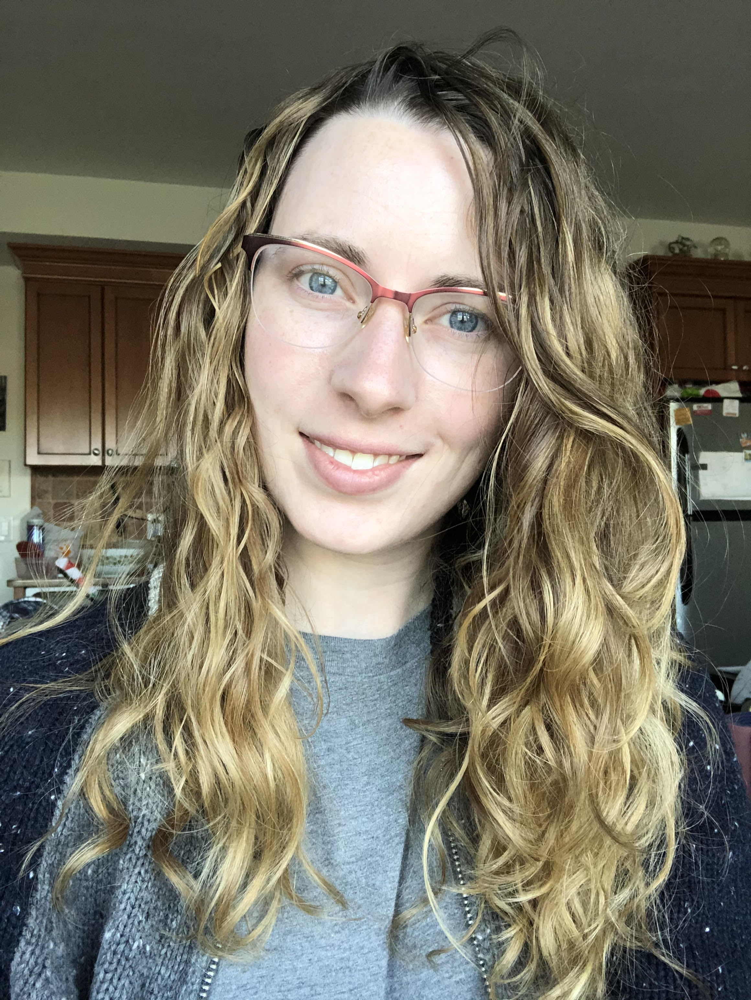

About Me

Hi, I'm Bailey!
I'm a Nebraska native who for the last three years has fallen in love with the cultural diversity of New York City and the beauty of the Hudson Valley. In college, I decided if I could get through the infamous calculus 2 class I could accomplish getting a computer science degree. Check and check.
I’m confident, competitive, creative, honest, and most of all easily excited.
In my free time, I enjoy reading, gaming, skateboarding, hiking, and most close to my heart is painting with my mom on zoom.
When I need some “me time” I grab a warm cup of coffee, drive down some fun, windy roads (also known as “Miata roads”), listen to my favorite interior design podcast “Dear Alice”, and head for Target.

Some of my favorite creations from Art Night with my mom.
My cat Lady, Queen of Sits.

Ruins of an incline escalator on Mount Beacon.